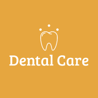

Witamy w
DENTAL CARE
- Ul. Przykładowa ulica 23
- 123-456-789
Umów się online!

Obraz autorstwa artursafronovvvv na Freepik
1.
Opieka dentystyczna
Poznaj na czym polega opieka dentystyczna.
Więcej
Opieka stomatologiczna polega na udostępnieniu ogółowi ludności lub określonym jej grupom
świadczeń zapobiegawczo-leczniczych w zakresie schorzeń jamy ustnej, zębów i twarzoczaszki, na
rehabilitacji narządu żucia w drodze leczenia protetycznego i ortodontycznego oraz na wydawaniu
w tym zakresie orzeczeń.
https://sip.lex.pl/akty-prawne/dzienniki-resortowe/opieka-stomatologiczna-34844285